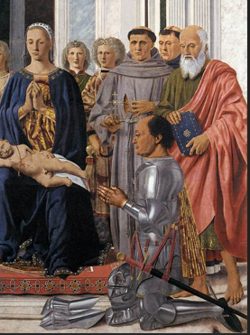

From Portrait to Altarpiece: Two Images of Power

In the double portrait, Federico asserts his rank through his profile, clothing and landscape. In the Montefeltro Altarpiece, the same duke kneels before the Virgin: his armour recalls his military role, while his posture expresses devotion. Two images of one man, with different purposes.